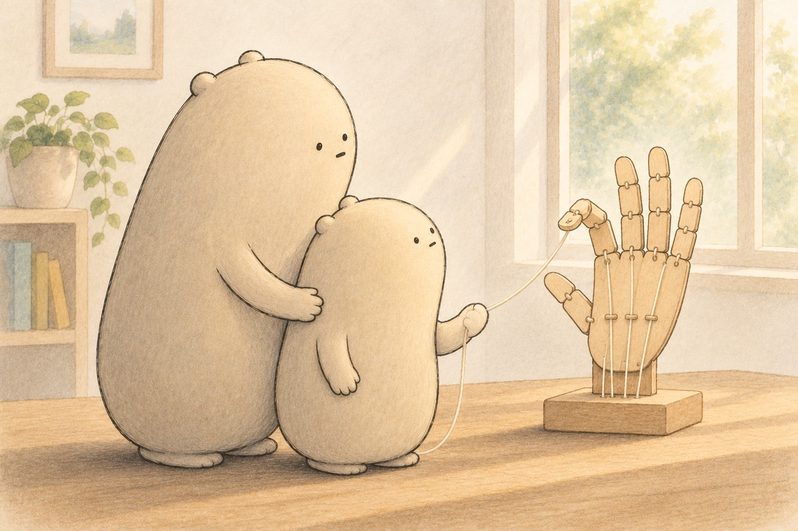

Who Pulls My Strings?
Little Wonderer pulled on a string, only one,
and a toy finger curled like a cat in the sun.
“Who’s pulling MY fingers?” the little one cried.
“I don’t see a string, and I’ve looked on each side!”
Big Wonderer laughed. “You have strings, it is true.
They’re tendons, tucked under your skin, out of view.
Your muscles sit up in your arm past your wrist,
and they tug, and they tug, till your fingers make fists.”
Inside every finger are three bones in a row
(the thumb has just two, as the toy seemed to know),
with joints in between them that fold like a door —
just one way, not backward. (Please don’t try for more.)
But muscles can’t push, so to open back wide,
there are strings on the back, on the knuckle-y side.
So the little one waved at the toy on the shelf:
“We both work on strings — but I pull them myself!”